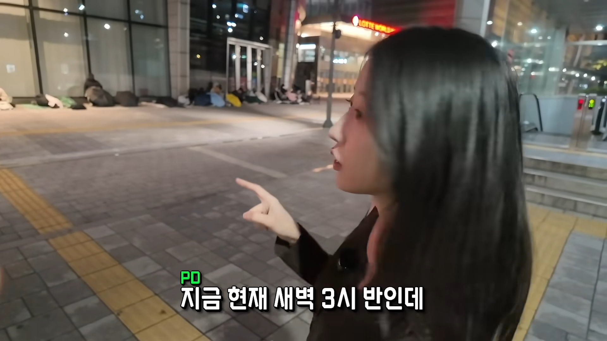
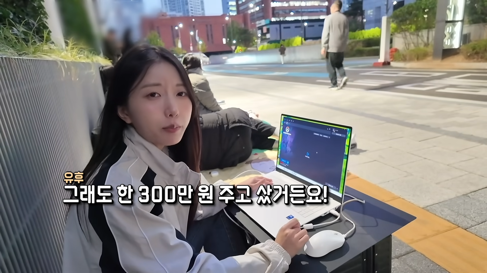
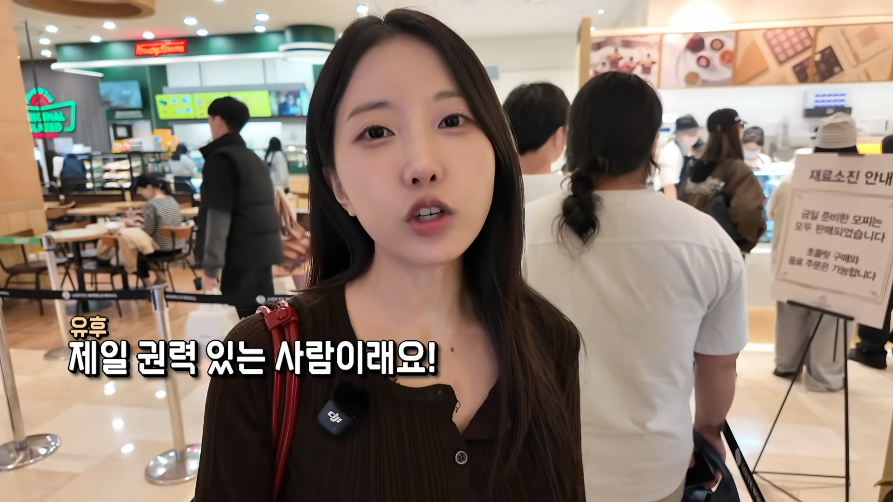
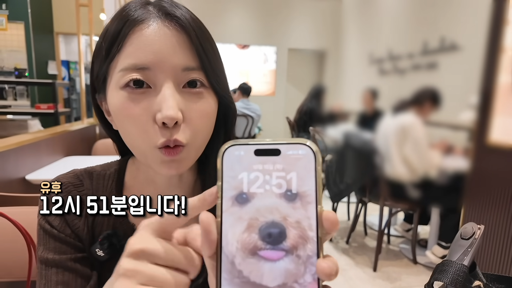

롯데월드몰 고디바 매장에서 1일 150명 한정으로만 판매한다는 고디바 모찌
새벽 3시 36분에 왔는데 이미 100명이 줄을 서 있음
새벽 4시 52분에 이미 150명 웨이팅 마감
(모찌 먹으려고 노숙하는 사람들)

3시간을 기다렸으나 아직도 오전 6시
어떻게든 견디기 위해 게이밍 노트북까지 챙겨온 초미녀 유튜버
웨이팅 등록 시간은 9시
유튜버 앞에는 이미 100명이 있기 때문에,
실제로 먹을 수 있는 시간은 약 오전 11시 정도로 예상
초미녀 유튜버답게 웨이팅 중간에도 쏟아지는 사진 촬영 요청
그러나 그녀의 미모로도 고디바 모찌 삥뜯어내기는 쉽지 않았다
5시간을 기다려서 드디어 웨이팅 기계 앞에 도착했으나,
워크인 시간은 오후 1시로 예상된다는 소식에 충격
현재 맨 앞줄 손님은 143번, 그런데 줄을 서있는 사람은 10명이 넘는다
정말로 150번에서 끊어버리는지 지켜보는 초미녀 유튜버
진짜로 150번에서 끊어버린다
새벽부터 기다렸든 말든 알빠노? 무조건 선착순 150명만 모십니다
새벽 4시 이후부터 웨이팅 하는 사람은 선착순에 들기 어려울 것 같다는 결론
외출한지 10시간이 넘어가는 강행군
롯데월드몰에서 시간을 떼우다가 드디어 입장 안내를 받는다

국가 권력급 모찌를 손에 넣은 국가 권력급 초미녀는 기분이 좋아졌다

새벽 3시 30분부터 10.5시간을 기다려서 드디어 주문 완료
미모가 돋보인다
1인당 주문 가능 갯수는 4개
초미녀 유튜버는 피디와 함께 왔기에 8종을 다 구입할 수 있었다
먹어봅니다
맛이 굉장한 모양
고급진 어휘 선정
물론 모든 메뉴가 다 맛있지는 않다
8개 중에서 4개 정도는 굳이 여기까지 와서 먹어야 되나 싶은 맛이라는 평가
딸기와 과일이 들어간 나머지 4개 메뉴는 굉장히 맛있음
하지만 맛이 너무 강해서 1개 이상은 혼자서 다 먹기 힘들다는 결론
마지막으로 소신 발언 "두쫀쿠가 더 맛있다"
초미녀(?)